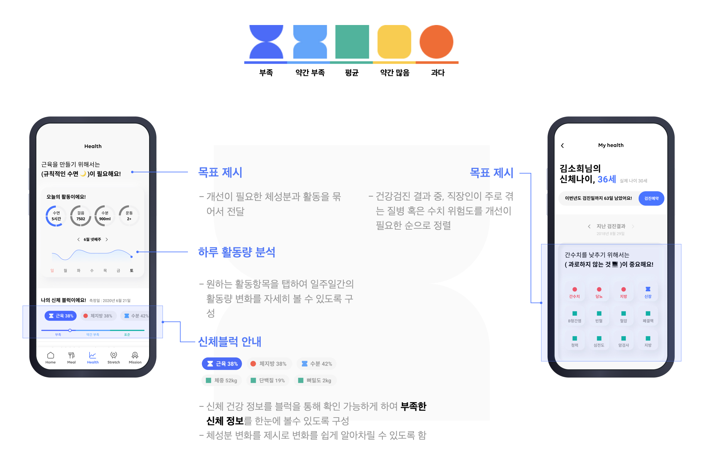
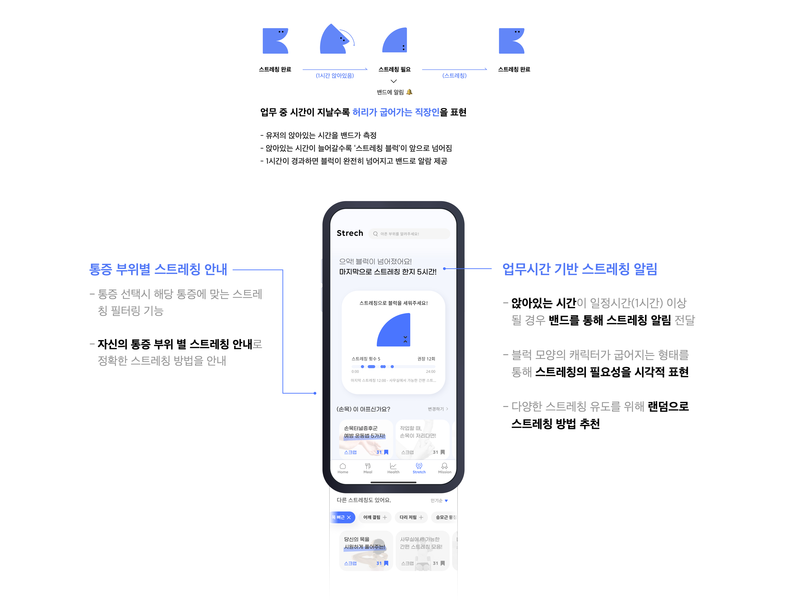

블럭을 통해 내 몸의 균형을 찾자!
To-B는 개인 삶의 활력 증진과 업무 생산성 향상을 위한
직원용 건강 케어 서비스입니다.
To-B는 개인 삶의 활력 증진과 업무 생산성 향상을 위한
직원용 건강 케어 서비스입니다.
Date : 2020
Category : UX design
Contribution : 60%
Category : UX design
Contribution : 60%
블럭을 통해 내 몸의 균형을 찾자! To-B, 나를 도와줘!
직장인들의 식생활 실태조사


직장인들의 건강관리 실태조사

직장인들의 업무 중 통증 관련 실태조사


직장인들의 의지부족 실태조사


투비만의 차별성
 투비는 블럭을 통해 시각적으로 균형을 맞추도록 도와줍니다!
투비는 블럭을 통해 시각적으로 균형을 맞추도록 도와줍니다!
투비는 직장인을 대상으로 하고있는 만큼,
투비는 우리 회사에 맞춰 로고를 바꿔줘요,앱을 켤 때마다 내가 회사에 소속되었음을 느낄 수 있어요!
펜과 노트
어디서든, 어떤 내용이든 담아내는 번개장터 같은 도구
번개장터의 라이프스타일을 담았어요 :)
그립톡
밀레니얼 세대의 IT 아이템인 그립톡을 통해 그들과 가까워지세요.
에코백
가볍고 편한,출근할 때도 여행갈 때도 들 수 있는 가방. 중고거래의 가치를 어깨에 매 볼까요?
 You can have whatever you like.
You can have whatever you like.기타 품목
번개장터 인기검색어 '떡메'는 뭘까요? DIY 메모지를 말해요. 휙,슉,샥을 기억하세요!
일하다 시선을 돌렸을 때 컵에 적힌 글귀를 보면서 의미를 찾을 수 있어요.
 내 책상 지킴이 번장이. 언젠간 레고 제태크도 도전해 보세요!
내 책상 지킴이 번장이. 언젠간 레고 제태크도 도전해 보세요! 접혀있던 스튜디오를 펼치면,조명과 두가지 색 배경지까지! 세월의 흔적 뒤 숨겨진 가치를 찾아줄게요.
접혀있던 스튜디오를 펼치면,조명과 두가지 색 배경지까지! 세월의 흔적 뒤 숨겨진 가치를 찾아줄게요.